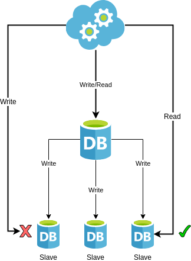
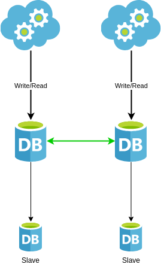
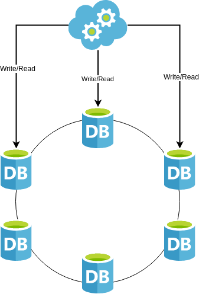

Elassandra
Micro-Services Database
BBTex 12/03/2020
Agenda
- Data Requirements
- Data Replication
- ElasticSearch
- Apache Cassandra
- Elassandra
- Demo
Data Requirements
- Availability
- Scalability
- Searchability
- Analyze & Processing
Master/Slave
|  |
- Synchronous Replication:
- Asynchronous Replication:
- Slave may have stale data
- Manual Failover:
- Writes impossible for a while
- Automatic Failover:
- Split Brain may occur (two masters)
|
Multi-Master
|  |
- Master/Slave with Better availability
- But :
- May be complex according to topology
- May have conflicts
|
Masterless
|  |
- R/W High Availability (No SPOF)
- App developers responsible of consistency
- Anti-entropy/Synchro
- Conflicts : Last Write Win
|
ElasticSearch
- FullText Search
- Spatial Search
- Real-time Aggregation
- No MultiDC replication in OSS
ElasticSearch: Summary
| Requirements |
|
| Availability |
++ |
| Scalability |
+ |
| Multi DC |
- |
| Searchability |
+++ |
| Analyze & Processing |
+++ |
Apache Cassandra
- Distributed Hash Table
- Query with partition key
- Secondary indices are limited
- Aggregation possible but limited
Apache Cassandra: Summary
| Requirements |
|
| Availability |
+++ |
| Scalability |
+++ |
| Multi DC |
+++ |
| Searchability |
+ |
| Analyze & Processing |
+ |
Elassandra
- Elastic & Cassandra tightly coupled
- Single Cluster to manage
- No sync plumbing
- No duplicate data
- Real-time search & Analytics
- Effortless scale
- High-Avalability & Multi-DC
- Cloud-agnostic or On-Premise
Bi-Directionnal Mapping
- Adapt CQL Schema according to Document Fields
- Discover ElasticSearch mapping base on CQL Schema
Nested Document
- Nested documents are stored in a Cassandra User Defined Type
- UDT dynamically generated from the Elasticsearch mapping.
CQL Extension
ElasticSearch queries though CQL
cassandra@cqlsh> SELECT * FROM twitter.tweet WHERE
es_query='{ "query":
{"query_string": {"query":"bar2*"}}
}';
Multiple Indices
- On single Keyspace
- On single table
- Partition Indices
- Virtual Indices
Ecosystem
- Compatible with Elasticsearch stack
- Compatible with Cassandra environment
- Apache Spark
- Cassandra Reaper
Elassandra : Summary
| Requirements |
|
| Availability |
+++ |
| Scalability |
+++ |
| Multi DC |
+++ |
| Searchability |
+++ |
| Analyze & Processing |
+++ |
Elassandra Enterprise
- ElasticSearch API security
- SSL
- Auth & Authz
- Content-Based Security
- Audit logs
- Join Queries
- JMX Support
- Backup & Restore